The battery energy storage systems (BESS) market is experiencing unprecedented growth, with global installations reaching 55.7 GW in 2023 alone—more than doubling from the previous year. At the heart of this expansion lies a fierce competition between two dominant lithium-ion chemistries: Lithium Iron Phosphate (LFP) and Nickel Manganese Cobalt (NMC). This technological battle is reshaping the energy storage landscape, with LFP emerging as the clear victor in stationary applications while NMC maintains its foothold in specialized use cases.
The Market Battlefield
The BESS market has witnessed a dramatic shift in chemistry preferences over recent years. LFP now commands a dominant 60-70% market share in battery energy storage applications, significantly outpacing NMC's 15-20% share. This dominance becomes even more pronounced in grid-scale deployments, where LFP powers approximately 85% of new large-scale energy storage systems.
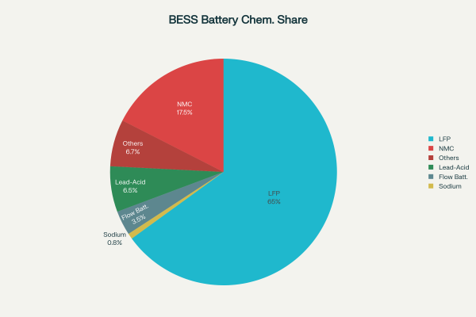
Several factors drive this market evolution. The global BESS market, valued at $76.69 billion in 2025, is projected to reach $172.17 billion by 2030. China leads with 27.1 GW of installed capacity in 2023, followed by the United States at 15.8 GW. The rapid deployment is fueled by renewable energy integration needs, grid stability requirements, and supportive government policies worldwide.
Chemistry Fundamentals: Understanding the Contenders
Lithium Iron Phosphate (LFP) utilizes lithium iron phosphate (LiFePO4) as the cathode material, paired with a graphite anode. The olivine crystal structure of LFP provides exceptional thermal and chemical stability. The cathode chemistry excludes expensive and ethically problematic materials like cobalt and nickel, relying instead on abundant iron and phosphate compounds.
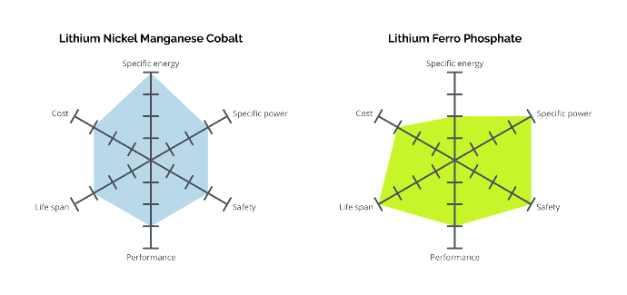
Nickel Manganese Cobalt (NMC) employs a layered oxide cathode combining nickel, manganese, and cobalt in various ratios (such as NMC 111, 532, 622, or 811). This configuration allows for higher energy density but introduces thermal stability challenges and supply chain vulnerabilities due to cobalt dependence.
Performance Comparison: The Technical Showdown
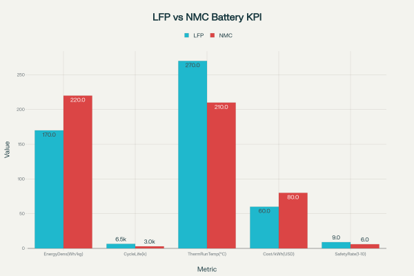
Safety: LFP's Decisive Advantage
Safety represents perhaps the most critical differentiator between these chemistries in BESS applications. LFP demonstrates superior thermal stability with a thermal runaway threshold of approximately 270°C, significantly higher than NMC's 210°C. This 60°C difference provides crucial safety margins in large-scale installations.
Recent research reveals that while NMC cells enter thermal runaway at around 160°C, LFP cells remain stable until 230°C. During thermal runaway events, NMC cells can reach peak temperatures of 800°C compared to LFP's 620°C. The thermal runaway propagation speed in NMC811 batteries is five times faster than in LFP systems.
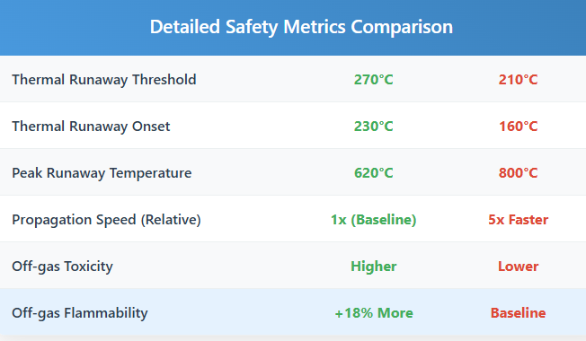
Counterintuitively, recent studies suggest that LFP batteries may produce more toxic off-gases during thermal runaway events, with gases that are 18% more flammable than NMC equivalents. However, the significantly higher thermal threshold and slower propagation rates of LFP systems provide more time for intervention and mitigation, making them inherently safer for large-scale deployments.
Cycle Life: LFP's Long-Term Supremacy
LFP batteries typically deliver 6,000+ cycles at 80% depth of discharge, substantially exceeding NMC's 2,000-4,000 cycle range. This superior longevity translates directly to lower levelized cost of storage (LCOS) over the system lifetime.
Real-world testing of LFP modules in grid applications shows that peak shaving services accelerate battery aging more than frequency regulation, with aging decay ratios of 1.81 at 25°C and 1.92 at 40°C. However, even under demanding grid services, LFP batteries maintain their cycle life advantage over NMC systems.
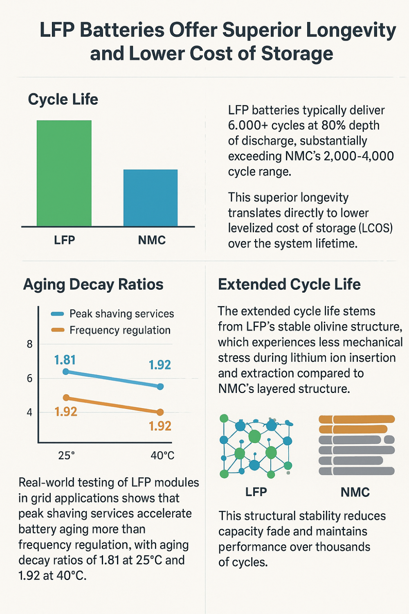
The extended cycle life stems from LFP's stable olivine structure, which experiences less mechanical stress during lithium-ion insertion and extraction compared to NMC's layered structure. This structural stability reduces capacity fade and maintains performance over thousands of cycles.
Energy Density: NMC's Remaining Edge
NMC maintains a significant advantage in energy density, typically achieving 200-240 Wh/kg compared to LFP's 160-180 Wh/kg. This 25-35% density advantage means NMC systems require less physical space and weight for equivalent energy storage capacity.
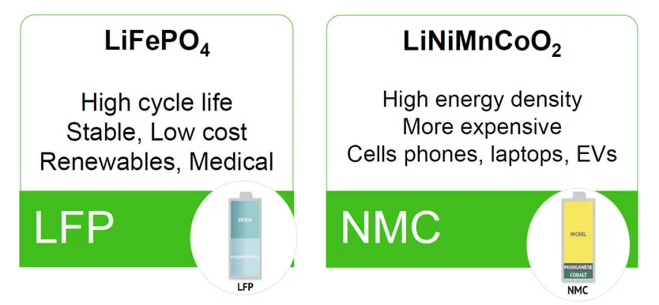
However, this advantage proves less critical in stationary BESS applications where space constraints are typically less severe than in mobile applications like electric vehicles. Grid-scale and commercial installations can often accommodate the larger footprint required by LFP systems, especially given the offsetting benefits in safety, longevity, and cost.
Cost Dynamics: The Economic Battleground
Cost represents a decisive factor favoring LFP in BESS applications. LFP cell prices have dropped dramatically, with Chinese manufacturers achieving prices below $60/kWh in 2024, and industry leader BYD driving costs down to approximately $44/kWh. NMC cells command a premium of 20-30% over LFP equivalents.
The cost advantage stems from several factors: abundant raw materials (iron and phosphate vs. nickel and cobalt), simplified thermal management requirements, and manufacturing scale economies. LFP avoids expensive cobalt entirely, insulating it from volatile commodity price swings that affect NMC production costs.
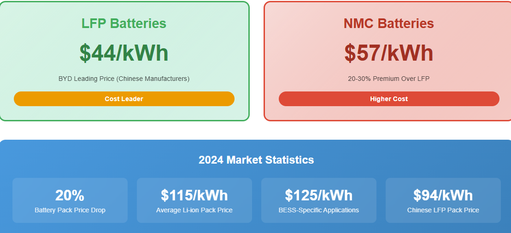
Average lithium-ion battery pack prices fell 20% to $115/kWh in 2024, with BESS-specific applications reaching $125/kWh. Chinese LFP battery packs now cost as little as $94/kWh, while U.S. and European packs remain 31% and 48% more expensive, respectively.
Grid-Scale Applications: Real-World Performance
In utility-scale deployments, LFP systems have demonstrated superior performance across multiple metrics. The technology's flat voltage discharge curve simplifies state-of-charge monitoring, though it can complicate cell balancing in large battery packs.
Grid services such as frequency regulation and peak shaving place different demands on battery systems. Research shows that peak shaving applications accelerate battery aging more than frequency regulation due to higher average current rates. However, LFP's superior cycle life provides adequate performance margins for both applications.
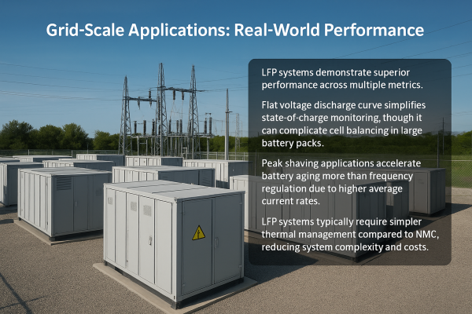
Temperature management becomes critical in large-scale installations. LFP systems typically require simpler thermal management compared to NMC, reducing system complexity and costs. However, LFP performance degrades more rapidly at low temperatures, requiring heating systems in cold climates.
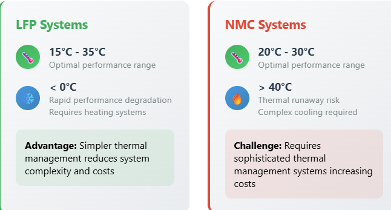
Market Trends and Future Outlook
The BESS market continues its rapid expansion, with analysts projecting 1,300 GW of global battery storage capacity needed by 2030 to support clean energy transitions. Current growth rates of approximately 120% annually suggest this target could be achieved ahead of schedule by 2028.
LFP's market dominance appears likely to strengthen further. Manufacturing overcapacity, particularly in China, continues driving prices down while improving quality and performance. The technology's advantages in safety, longevity, and cost align well with the requirements of utility-scale storage applications.
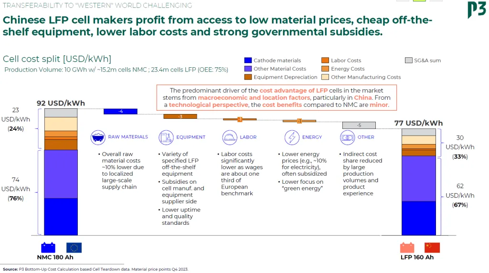
NMC faces headwinds from volatile raw material costs, particularly for nickel and cobalt. However, the chemistry maintains relevance in applications requiring maximum energy density or specific performance characteristics. High-nickel NMC variants (like NMC 811) offer improved energy density but face increased thermal stability challenges.
Regional Dynamics and Supply Chain Considerations
China dominates both LFP production and BESS deployments, accounting for over three-quarters of global battery storage capacity. Chinese manufacturers benefit from vertical integration, lower labor costs, and government subsidies, creating cost advantages of up to 19% over European and North American producers.
The United States and European Union are implementing policies to develop domestic battery supply chains, including the Inflation Reduction Act's 30% investment tax credit for standalone storage projects. However, building competitive domestic LFP production capacity remains challenging given China's established scale advantages.
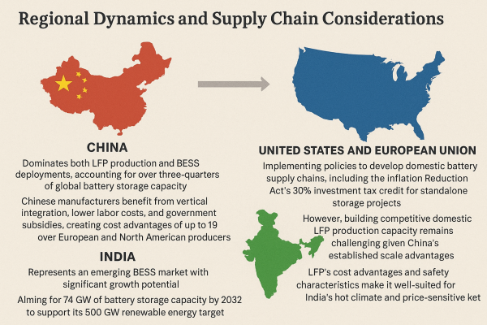
India represents an emerging BESS market with significant growth potential. The country aims for 74 GW of battery storage capacity by 2032 to support its 500 GW renewable energy target. LFP's cost advantages and safety characteristics make it well-suited for India's hot climate and price-sensitive market.
Technology Evolution and Innovation
Both chemistries continue evolving through incremental improvements. LFP manufacturers are developing enhanced formulations like LMFP (Lithium Manganese Iron Phosphate) that improve energy density while maintaining safety advantages. These advanced LFP variants achieve 120-140 Wh/kg compared to standard LFP's 110 Wh/kg.
NMC development focuses on high-nickel formulations and improved thermal stability. However, increasing nickel content generally reduces thermal stability, creating trade-offs between energy density and safety.
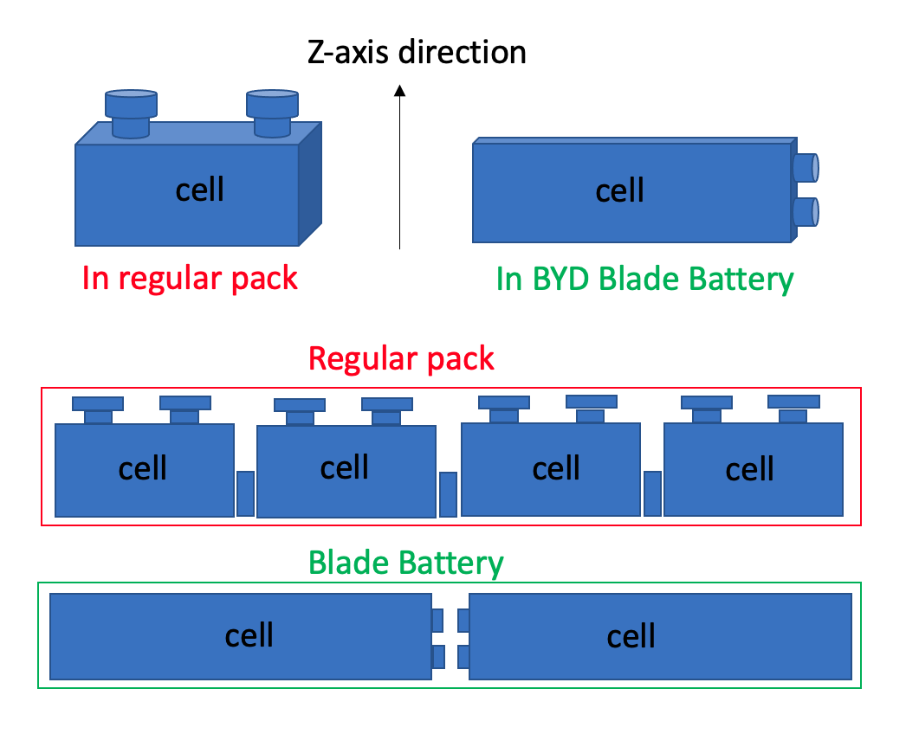
Cell-to-pack (CTP) and cell-to-body (CTB) technologies are gaining adoption, particularly for LFP systems. These approaches eliminate module-level packaging, reducing costs and improving thermal management. Chinese manufacturers like BYD and CATL lead CTP implementation with their Blade and Qilin battery architectures.
Environmental and Sustainability Considerations
LFP offers superior environmental credentials compared to NMC. The chemistry avoids cobalt, eliminating concerns about artisanal mining practices and supply chain ethics. Iron and phosphate are abundant, widely available materials with established recycling processes.
NMC faces challenges from cobalt sourcing, with significant production concentrated in politically unstable regions. However, high-nickel NMC formulations reduce cobalt content, partially addressing these concerns.
Both chemistries benefit from lithium-ion battery recycling infrastructure development. However, LFP's simpler chemistry and non-toxic components make it easier and more cost-effective to recycle at end-of-life.
Conclusion: The Verdict in BESS Applications
The cell chemistry war in BESS applications has produced a clear winner: LFP dominates through superior safety, longer cycle life, and lower costs. While NMC maintains advantages in energy density, these benefits cannot offset LFP's compelling value proposition for stationary storage applications.
LFP's 60-70% market share in BESS reflects this technological superiority. The chemistry's thermal stability provides crucial safety margins for large-scale installations, while its extended cycle life reduces long-term costs. Manufacturing scale and raw material abundance ensure continued cost advantages.